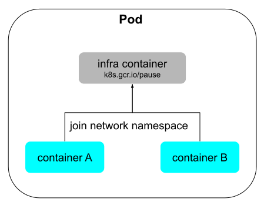
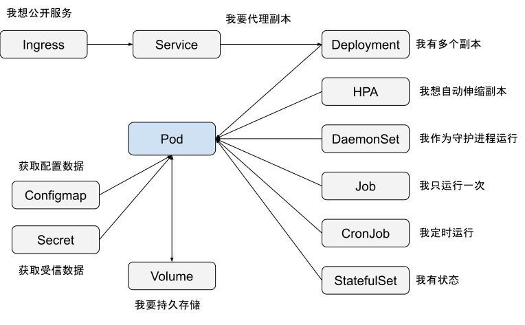
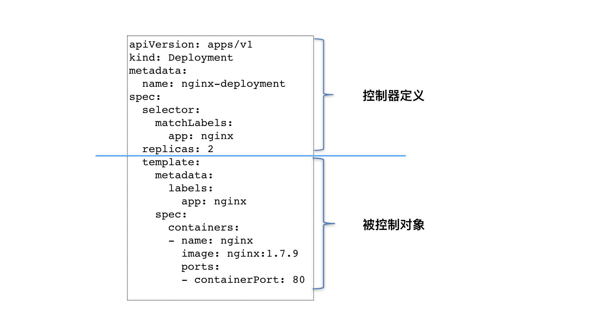

k8s容器编排与作业管理#
Author by: 何晨阳
k8s本质上是面向数据中心的操作系统，容器编排和作业管理是云原生架构的核心支撑。其中容器编排负责应用容器的自动部署、扩缩容、负载均衡和自愈，保证服务高可用运行。同时作业管理则专注于批处理和定时任务的自动调度与容错，提升任务执行可靠性和自动化水平。
容器编排#
首先我们来思考为什么需要容器编排？其有哪些优势？其实现原理是什么？
容器编排的由来#
随着复杂应用和大规模部署的挑战，使用复杂脚本来管理大规模机器的方法变的越来越力不从心。同时在面对服务扩缩容、故障自愈、资源优化等问题时，也缺少一套统一的方案来应对。于是“容器编排”这项技术应运而生。
这项技术正是基于前文介绍的Cgroups与Namespaces等基础技术，为容器发展奠定了基础。Linux Containers是早期容器实现，后面随着Docker诞生，提供了标准化的容器镜像格式和相应的命令行工具，但是此时还缺乏自动化等编排能力。随着Docker Compose、Docker Swarm等编排工具的发展，容器逐步具备了调度编排等能力。随着Kubernetes的开源，其逐步成为容器编排领域内的事实标准，拥有全球最大的开源社区，并构建了丰富的生态工具，引领着云原生技术发展。
容器编排的优势#
其最大的优势便是自动部署与管理，只需要开发运维人员预先定义好期望的状态，系统便能自动运行，直至达到期望的状态。
弹性扩缩容的能力，可以根据负载自动增加或减少容器副本数，优化资源利用率，提升服务的弹性。
故障自愈能力，随着机房机器规模的增长，机器故障也逐渐成为常态。其能够自动检测容器和节点故障，实现自动重启、迁移或替换，保障服务的高可用。
实现原理#
Pod是k8s中最核心的设计之一，本质上是一组超亲密容器集合，容器间共享IPC、Network、UTS等命名空间，是k8s中最基本的单位。引入Pod后，应该如何让Pod内的容器能够共享资源和数据呢？
答案见下图中的infra container。它作为Pod中第一个启动的容器，负责申请基础的UTS、IPC、网络等命名空间，而其他容器通过setns共享该命名空间。但是PID和文件系统的命名空间仍然是隔离的，因为容器需要独立的文件系统，并且避免某些容器进程缺少PID=1的进程。当然，如果想要共享PID命名空间，也可以在Pod的yaml中设置shareProcessNamespace:true来实现。

有了Pod作为最小调度单元后，于是又抽象出Deployment这个概念，用于管理应用发布。它可以通过定义Pod模版，来控制ReplicSet的创建和更新，实现滚动更新等管理功能。
以如下代码为例，其定义了期望的Pod副本数。可以看出Deployment的设计哲学是，通过声明式API定义期望的状态，只关注要做什么，不关注实现过程。
apiVersion: apps/v1
kind: Deployment
spec:
replicas: 3 # 期望的Pod副本数
revisionHistoryLimit: 10 # 保留的旧ReplicaSet数量
strategy:
type: RollingUpdate
rollingUpdate:
maxSurge: 1 # 允许超出期望副本数的最大Pod数
maxUnavailable: 0 # 更新期间允许不可用的Pod数
template: # Pod模板
spec:
containers:
- name: nginx
image: nginx:1.25.3
完成Pod相关功能定义后，再向上一层就需要对外暴露底层服务。这个功能就是通过Service和Ingress来实现。
Service通过为变化的Pod提供稳定的访问入口，屏蔽Pod Ip变化带来的影响。Ingress基于域名、路径等L7规则将外部请求路由到不同的Service，比如example.com/app1 路由到 app1-svc，example.com/app2 路由到 app2-svc。
如下图定义了k8s中核心功能模块关系图，本章节重点介绍了Pod、Deployment、Service和Ingress等概念，后续章节将继续介绍剩下的模块。

控制器模型#
为了实现对不同的对象、资源的编排操作，核心就是通过控制器模型实现的。如下图所示，其首先会通过上半部分定义期望的状态，下半部分定义被控制对象的模版组成。

定义完期望状态后，会通过控制循环，来将目标对象调谐到指定的状态，执行逻辑如下：
for {
实际状态 := 获取集群中对象 X 的实际状态（Actual State）
期望状态 := 获取集群中对象 X 的期望状态（Desired State）
if 实际状态 == 期望状态{
什么都不做
} else {
执行编排动作，将实际状态调整为期望状态
}
}
关键功能#
Kubernetes通过声明式配置与控制循环机制，将容器编排抽象为四大核心能力，通过对这四种能力的总结，能进一步了解其设计背景与价值所在。
资源分配智能化的核心在于调度算法的优化与资源感知。k8s调度器持续监控集群中各节点的资源状态，包括实时CPU利用率、内存剩余量、存储类型及网络拓扑。当用户提交Pod部署请求时，调度器不仅考虑基本的资源请求（requests）和限制（limits），还会结合节点亲和性规则（nodeAffinity）决定最优部署位置。例如，针对需要GPU加速的工作负载，调度器会筛选带有特定标签的节点，同时避免将高内存消耗的Pod部署到磁盘I/O密集型节点，防止资源竞争。存储的动态供给机制则通过StorageClass实现自动化卷创建，当PersistentVolumeClaim声明存储需求时，系统自动关联匹配的存储后端并挂载到Pod，这种机制有效解决了传统运维中手动配置存储的繁琐问题。
故障恢复自动化依赖于控制器模式与健康检查机制的协同。每个Deployment控制器持续监听APIServer的状态变化，当检测到实际运行的Pod副本数低于预期时，立即触发ReplicaSet创建新实例。健康探针在此过程中起到关键作用：存活探针（LivenessProbe）定期检测应用进程状态，若连续失败则重启容器；就绪探针（ReadinessProbe）确保Pod完成初始化后再接入服务流量，避免请求分发到未准备好的实例。当底层节点发生故障时，节点控制器会标记节点状态为NotReady，并启动驱逐流程，将受影响Pod重新调度到健康节点。这种设计使得单个节点或Pod的故障对整体服务的影响被控制在毫秒级，实现了系统层面的高可用性。
基础设施抽象化通过分层设计屏蔽环境差异。在存储层面，PersistentVolume将物理存储设备抽象为统一接口，开发者只需声明所需存储大小和访问模式，无需关心底层是NFS、云盘还是本地SSD。（存储、网络等相关知识，后文会详细介绍）网络抽象则通过Service和CNI插件实现，ClusterIP类型的Service为Pod集合提供稳定的虚拟IP，Ingress资源定义七层路由规则，而具体流量转发由IngressController（如Nginx、Traefik）实现。这种抽象机制使得应用可以无缝迁移跨公有云、私有云甚至边缘节点，运维人员通过统一API管理异构资源，显著降低了环境适配成本。
变更操作无损化的实现依赖于版本控制与流量管理策略。Deployment控制器在更新镜像时，会创建新的ReplicaSet并逐步调整新旧副本集的比例，通过maxSurge参数控制同时创建的新Pod数量，maxUnavailable参数确保最少可用实例数。在Pod终止阶段，kubelet先发送SIGTERM信号触发应用优雅关闭流程，等待terminationGracePeriodSeconds后强制终止，确保进行中的请求处理完毕。对于需要零停机的高敏感服务，PreStop钩子可执行自定义清理脚本，如从负载均衡器摘除节点。金丝雀发布场景下，通过ServiceMesh或IngressAnnotation将部分流量路由到新版本，验证通过后再全量切换，这种渐进式更新最大限度降低了变更风险。
一些主要功能的配置如下所示：
功能 |
描述 |
配置示例 |
|---|---|---|
自动调度 |
基于资源需求和节点亲和性 |
|
自愈能力 |
自动重启故障容器 |
|
滚动更新 |
零停机部署 |
|
存储编排 |
动态挂载持久卷 |
|
Deployment 配置示例#
Deployment是管理无状态应用的核心抽象对象，下面是一个配置示例，其定义了Kubernetes Deployment的YAML配置文件，用于部署一个Nginx服务的多副本实例：
apiVersion: apps/v1
kind: Deployment
metadata:
name: nginx-deploy
spec:
replicas: 3
selector:
matchLabels:
app: nginx
template:
metadata:
labels:
app: nginx
spec:
containers:
- name: nginx
image: nginx:1.25
ports:
- containerPort: 80
作业管理（Job Management）#
Kubernetes 作业管理通过 Job 和 CronJob 实现了对非持续型任务的精细化控制，主要包括一次性任务和定时执行任务。
Job（一次性任务）#
运行直到成功完成（退出码为 0）的离散任务，配置示例如下所示，定义了完成任务总数、同时运行Pod数量等：
apiVersion: batch/v1
kind: Job
metadata:
name: data-processing
spec:
completions: 6 # 需要完成的任务总数
parallelism: 2 # 同时运行的Pod数量
backoffLimit: 3 # 失败重试次数
template:
spec:
containers:
- name: processor
image: data-tool:v3.2
command: ["python", "/app/process.py"]
restartPolicy: OnFailure # 失败时自动重启
CronJob（定时执行任务）#
下面定义了一个每天3点运行的任务示例：
apiVersion: batch/v1
kind: CronJob
metadata:
name: daily-report
spec:
schedule: "0 3 * * *" # 每天 3 点运行
jobTemplate:
spec:
template:
spec:
containers:
- name: report-generator
image: report-tool:latest
restartPolicy: OnFailure
关键参数#
作业管理的一些关键配置参数如下所示：
参数 |
作用 |
示例值 |
|---|---|---|
backoffLimit |
失败重试次数 |
3 |
activeDeadlineSeconds |
任务超时时间 |
3600 |
successfulJobsHistoryLimit |
保留成功 Job 记录数 |
5 |
failedJobsHistoryLimit |
保留失败 Job 记录数 |
2 |
容器编排 vs 作业管理对比#
下面比较了容器编排和作业管理各自适用的场景以及一些策略差别：
维度 |
容器编排（Deployment） |
作业管理（Job/CronJob） |
|---|---|---|
设计目标 |
长期运行服务 |
离散任务执行 |
生命周期 |
持续运行 |
运行到完成/超时 |
重启策略 |
Always (默认) |
OnFailure/Never |
扩缩容机制 |
HPA 自动扩缩 |
parallelism 手动控制并发 |
典型场景 |
Web 服务/数据库 |
批处理/定时报表/数据迁移 |
最佳实践#
下面是使用时的推荐的一些最佳配置：
资源限制：为Job设置resources.requests/limits 避免资源竞争。
超时控制：使用activeDeadlineSeconds防止任务卡死。
存储分离：Job中挂载临时卷（emptyDir）避免数据残留。
监控：通过Prometheus监控Job执行状态和时长。
总结与思考#
k8s通过容器编排和作业管理，实现了大规模容器部署，解决了手动调度效率低、易出错等问题，通过 Job/CronJob 优化了批处理任务管理。借助这两大能力，实现了从基础设施到应用层的全栈自动化，构建了现代分布式系统的基石。
参考与引用#
https://aws.amazon.com/cn/what-is/container-orchestration/
https://www.cnblogs.com/BlueMountain-HaggenDazs/p/18147309（《深入剖析 Kubernetes》容器编排与 k8s 作业管理）
https://www.thebyte.com.cn/container/summary.html